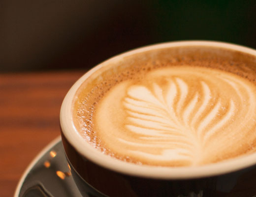
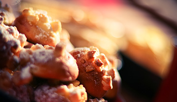

LA PAUSA COMPLETA
Café y algo más.
Encuentra el acompañamiento de tu bebida favorita. Consulta las opciones disponibles.
Consultar opciones ↗MEJOR EN BUENA COMPAÑÍA
Ideas para acompañar tu pausa y darle otro sabor a tu día.

LA PAUSA COMPLETA
Encuentra el acompañamiento de tu bebida favorita. Consulta las opciones disponibles.
Consultar opciones ↗
PARA COMPARTIR
Una invitación para ponerse al día y disfrutar juntos. Pregunta por nuestras combinaciones.
Preparar consulta ↗